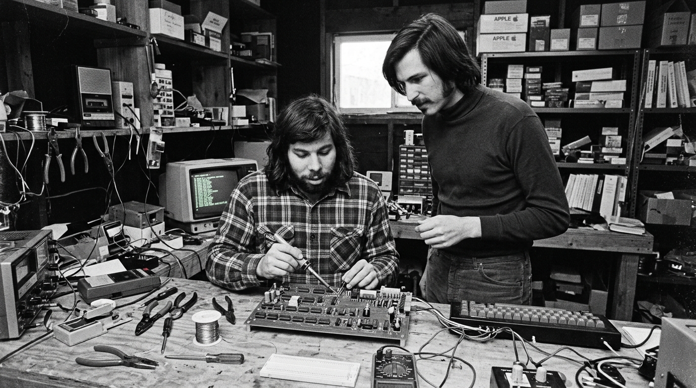
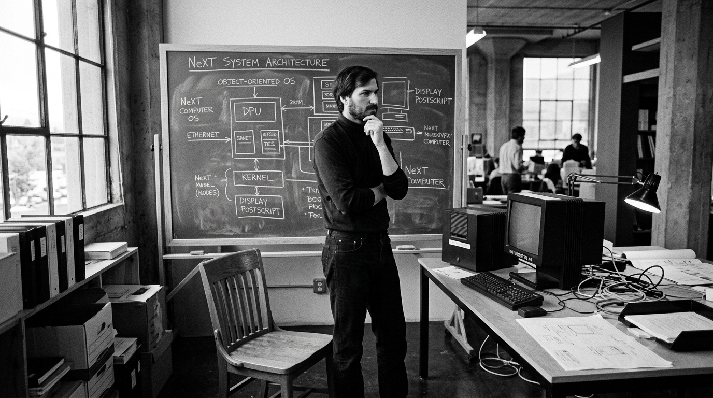
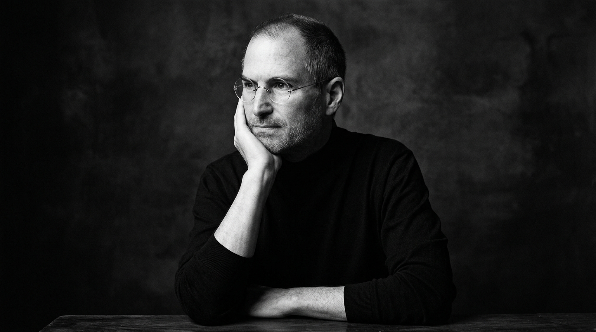
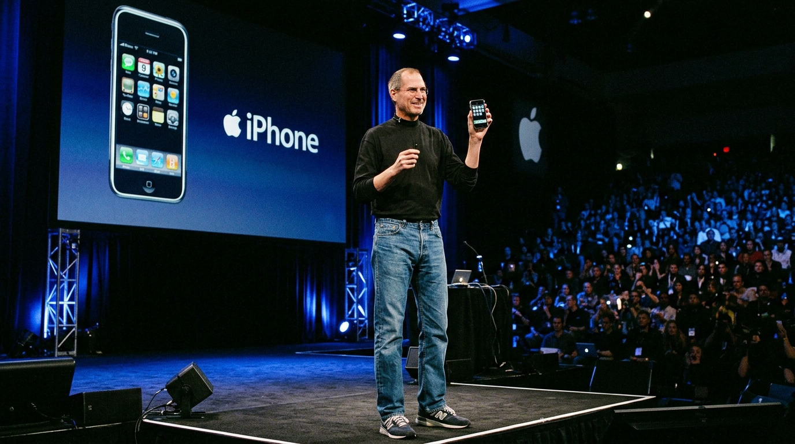

Архив Apple I • 1976
Стив Джобс и Стив Возняк за пайкой первых плат Apple I в гараже на Крист-драйв
Гаражная эра • Лос-Альтос, Калифорния
1976 — Рождение Apple в гараже родителей
1 апреля 1976 года Джобс, Возняк и Рон Уэйн подписали соглашение о партнерстве. Чтобы достать стартовые $1,300, Джобс продал свой потрепанный микроавтобус Volkswagen, а Возняк — программируемый калькулятор HP-65. В спальне и гараже дома они вручную распаяли первые 50 плат Apple I для местного магазина Byte Shop.
«Мы начали в гараже моих родителей вместе с Возом, когда мне был 21 год. Мы работали до изнеможения, и за десять лет Apple выросла в компанию стоимостью два миллиарда долларов.»
Капитал: $1,300
Процессор: MOS 6502 (1 МГц)
Команда: 2 основателя

Изгнание • NeXT Studio • 1985
Стив Джобс у доски с архитектурой новой ОС после вынужденного ухода из Apple
Кризис и перерождение • NeXT & Pixar
1985 — Изгнание из собственной компании
После драматического конфликта с советом директоров и генеральным директором Джоном Скалли 30-летнего Джобса отстранили от руководства проектом Macintosh. Опустошенный, Стив подал в отставку, продал все свои акции Apple кроме одной (чтобы получать годовые отчеты) и основал NeXT, а также выкупил за $10 млн анимационный отдел Lucasfilm, превратив его в великую студию Pixar.
«Увольнение из Apple стало лучшим событием, которое могло со мной произойти. Тяжесть успеха сменилась легкостью новичка. Это освободило меня и открыло один из самых творческих периодов моей жизни.»
Компания: NeXT Computer
Покупка Pixar: $10 000 000
Акции Apple: сохранил 1 шт.

Возвращение • Think Different • 1997
Стив Джобс на съемках манифеста «Think Different» после триумфального возвращения
Спасение компании • Эпоха iCEO
1997 — Возвращение за 90 дней до краха
В 1997 году Apple находилась на грани банкротства с запасом средств всего на 90 дней. Совет директоров купил NeXT за $429 млн, вернув Джобса. Стив без колебаний закрыл 70% продуктов, сократил неэффективные линейки компьютеров до матрицы 2x2, договорился об исторических $150 млн инвестиций от Microsoft и запустил легендарную кампанию «Think Different».
«Я вернулся не ради денег. Когда мне было 25 лет, мое состояние оценивалось в 100 миллионов, но я делал это не ради богатства. Я хотел вернуть великой компании её потерянную душу.»
До банкротства: 90 дней
Закрыто: 70% проектов
Фокус: матрица 2x2

Macworld SF • 9 января 2007
Стив Джобс держит первый iPhone на сцене Moscone Center в Сан-Франциско
Революция мобильного мира • iPhone
2007 — «Сегодня Apple изобретает телефон заново»
9 января 2007 года Джобс произнес историческую фразу: «Широкоэкранный iPod с сенсорным управлением... Революционный мобильный телефон... Прорывной интернет-коммуникатор. Это не три отдельных устройства, это одно!» iPhone с экраном Multi-Touch и закаленным стеклом Gorilla Glass перевернул индустрию и стал самым коммерчески успешным потребительским продуктом в истории.
«Время от времени появляется революционный продукт, который меняет всё. Если за карьеру вам посчастливится работать хотя бы над одним таким — вы уже невероятно удачливы.»
Формула: 3 в 1 устройстве
Инновация: Multi-Touch без стилуса
Продажи 1-го уик-энда: 270 000 шт.